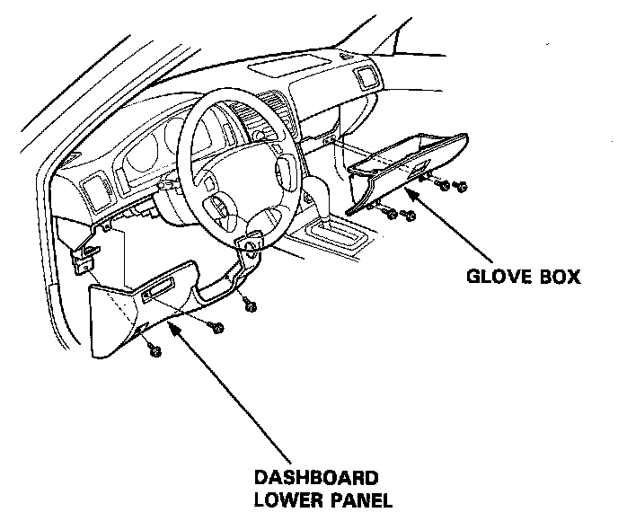
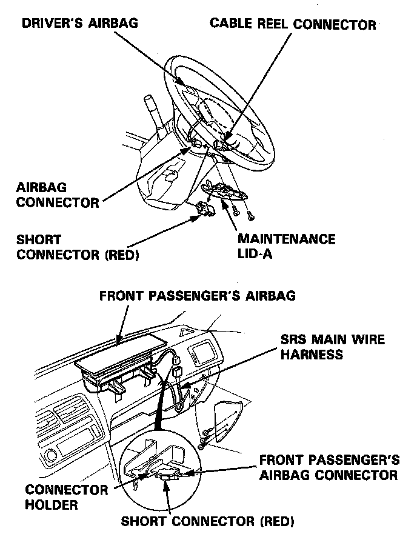
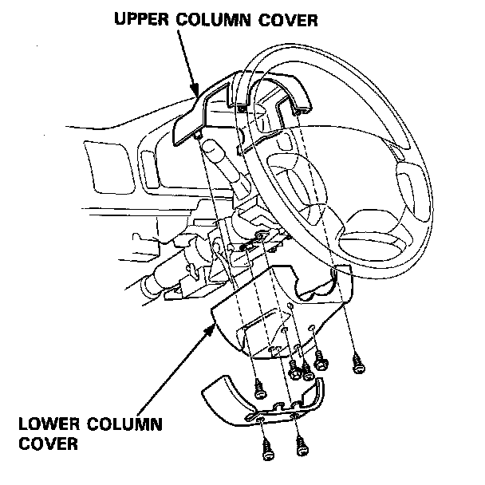
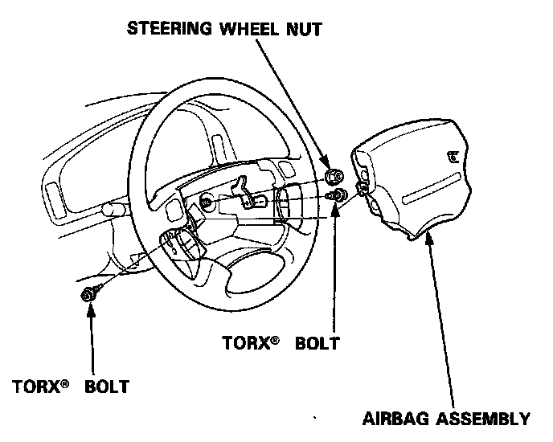
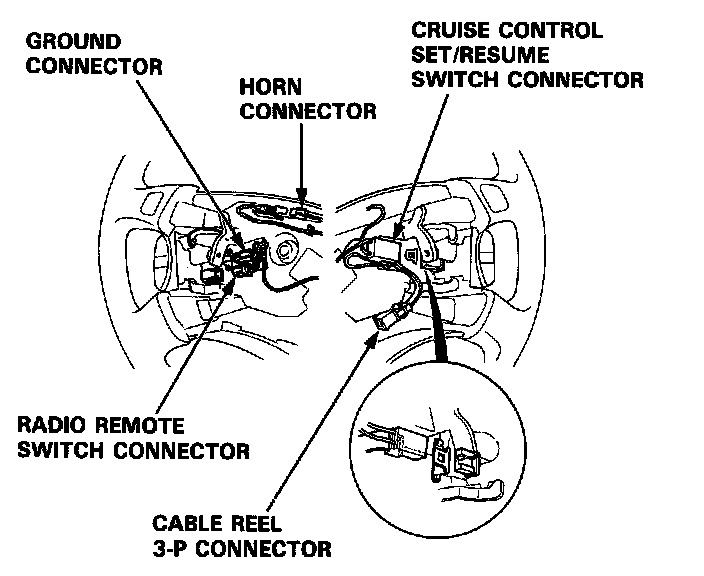
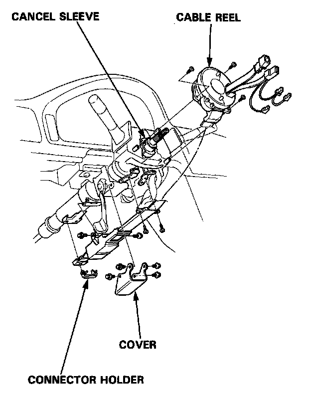

Cable Reel Removal
Cable Reel Removal
WARNING: Store a removed airbag assembly with the pad surface up. If the airbag is improperly stored face down, accidental deployment could propel the unit with enough force to cause serious injury.
CAUTION:
- Carefully inspect the airbag assembly before installing. Do not install an airbag assembly that shows signs of being dropped or improperly handled, such as dents, cracks or deformation.
- Always keep the short connector on the airbag connector when the harness is disconnected.
- Do not disassemble or tamper with the airbag assembly.
NOTE: Before you disconnect the battery, be sure you get the customer's anti4heft radio code number (L. LS model).
1. Disconnect the battery negative cable, then disconnect the positive cable.
2. Make sure the wheels are aligned straight ahead.
3. Remove the dashboard lower panel.
4. Remove the glove box.

5. Install the short connectors on both airbags.

6. Remove the upper and lower column covers.

7. Disconnect the connector between the cable reel and main harness.
8. Remove the airbag assembly from the steering wheel, then remove the steering wheel nut.

9. Disconnect the connectors from the horn, radio remote switch, ground and cruise control set/resume switches then remove the cable reel 3-P connector from its clips.

10. Remove the steering wheel from the column.
11. Remove the 4 bolts and remove the cover under the steering column.
12. Remove the cable reel and cancel sleeve.
